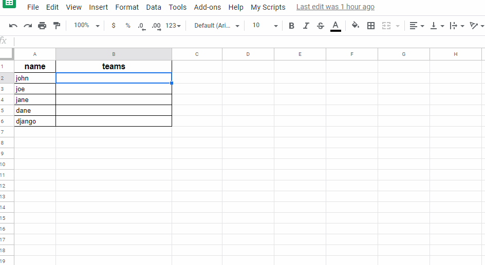

How to Create a Dialog to Select Multiple Values in Google Sheets
Spreadsheets are probably the most ubiquitous digital tool in offices around the world. Most of us have a love and hate relationship with them.
One of the things i missed in then for a long time was the ability to select multiples values for a cell. A emulation of one to many relationships between different data so common in many apps.
Since Google Sheets support scripting using Html and Javascript, it is quite easy to implement that feature in their spreadsheets.
Prepare The Data
First we create a simple example with sheets for people and teams records. In this case, a person can be in more than one team.
Populate the data in both sheets and set the Data validation option in the people sheet with the teams value range. This link will be vital to our script later.

Script Initialization
Now click in the Script Editor submenu inside the Tools menu. After the script editor screen opens, click in File, then New and finally in Script file. You can name the file whatever you want, let us stick with index.
Write some code to create a menu option inside the spreadsheet that we can use to call our future dialog. We do that by creating a onOpen function. The name is noted by the spreadsheet and called automatically.
function onOpen() {
const ss = SpreadsheetApp.getActiveSpreadsheet();
const multiselectMenu = {
name: 'Select multiple',
functionName: 'showSelectDialog'
}
ss.addMenu("My Scripts", [multiselectMenu]);
}After saving the script, you need to reload the spreadsheet window. After that the My Script menu should be available.
Hello World Dialog
The Apps Scripts technology offers a Html service that can render custom dialogs and sidebars on top of Google office apps. This is great because we can leverage standard Html, CSS and JavaScript together with the Google Api to create a new layer of features above google spreadsheets for example.
Let's create a Html file named dialog in the scripts editor to start exploring this feature. By pasting the code bellow in the dialog file we have a basic custom dialog, but no JavaScript to invoke it.
<!DOCTYPE html>
<html>
<body>
<p>Hello World!</p>
<input
type="button"
value="cancel"
onclick="google.script.host.close()"
/>
</body>
</html>To call the dialog, you need to go back go back to our index file and create a showSelectDialog function. You can see that the function code bellow hints to a template engine capability. This will be very useful to us in a few moments.
function showSelectDialog(){
const template = HtmlService.createTemplateFromFile('dialog');
const html = template.evaluate();
SpreadsheetApp
.getUi()
.showModalDialog(html, 'Select multiple');
}If you click in the Select multiple menu our Hello World dialog should appear. Google Sheets maybe ask you for an authorization to run the script. This could happen more then once during this project. Make sure everything sounds safe and click ok.
The challenge now is settle how to show all teams as options for the user to select in the dialog. We can also create a mechanism to check if some teams are already present in the cell show those ones selected in the dialog.
So write another function inside index that uses the validation data for a cell as a database for available options. The function could also check if any of the options are already present in the cell and mark those already as selected. Happily, Apps Scripts Api do most of the heavy lifting for us. See the function.
function getOptionsFromCurrentCell(){
const validOptions = SpreadsheetApp
.getActiveRange() // everything that is selected
.getDataValidation() // all validation rules for that
.getCriteriaValues()[0] // the first criteria
.getValues() // the value for this criteria
.map(value => value[0]); // flatten in an one dimension array
const cellData = SpreadsheetApp
.getActiveRange()
.getCell(1, 1) // first selected cell in the range
.getValue();
const selectedOptions = cellData
.split(',')
.map(str => str.trim());
const optionsData = validOptions.map(option => {
return {
value: option,
isSelected: selectedOptions.includes(option)
}
})
return optionsData;
}The Apps Script template engine let us inject data in templates that can be used inside the html. We can take advantage of that and update our showSelectDialog function to setup the options before calling the dialog.
function showSelectDialog(){
const template = HtmlService.createTemplateFromFile('dialog');
template.optionsData = getOptionsFromCurrentCell();
const html = template.evaluate();
SpreadsheetApp
.getUi()
.showModalDialog(html, 'Select multiple');
}Now we need to use that data inside out html to render checkboxes for every option. The template engine cares similar behavior then other typical templates javascript languages. Details can be found here.
Let's revisit the html to render the checkboxes. and also create a function to clear or select all items.
<!DOCTYPE html>
<html>
<body>
<? for (const option of optionsData) { ?>
<input type="checkbox" value="<?= option.value ?>" class="option" <?= option.isSelected && "checked" ?>>
<label><?= option.value ?></label><br>
<? } ?>
<div style="margin-top:10px;">
<input type="button" value="all" onclick="setAll('check')" />
<input type="button" value="clear" onclick="setAll('clear')" />
<input type="button" value="cancel" onclick="google.script.host.close()" />
</div>
<script>
function setAll(value) {
const optionsEl = document.querySelectorAll(".option");
for (const checkbox of optionsEl) {
checkbox.checked = value === 'check';
}
}
</script>
</body>
</html>Things are starting to get real. But we need to find a way to send the user selected options back to the spreadsheet. Google consider the dialog we develop as a client app and both the spreadsheet itself and the functions we wrote in the index file as the server part. So we need a bridge to comunicate back what the user selected. Gladly this is quite simple.
First let's write a new function in the index file that receives a array of choices as parameter and set that content in the current selected cell.
function setOptionsForCurrentCell(selectedOptions){
const cellData = (Array.isArray(selectedOptions) && selectedOptions.length > 0)
? selectedOptions.join(',')
: '';
const cell = SpreadsheetApp.getActiveRange().getCell(1, 1);
cell.setValue(cellData);
}Now we have to update out html file to create a apply button and create function that evokes the set function passing the selected options.
<!DOCTYPE html>
<html>
<body>
<? for (const option of optionsData) { ?>
<input type="checkbox" class="option" value="<?= option.value ?>" <?= option.isSelected && "checked" ?>>
<label><?= option.value ?></label><br>
<? } ?>
<div style="margin-top:10px;">
<input type="button" value="all" onclick="setAll('check')" />
<input type="button" value="clear" onclick="setAll('clear')" />
<input type="button" value="cancel" onclick="google.script.host.close()" />
<input type="button" value="apply" onclick="apply()" />
</div>
<script>
function setAll(value) {
const optionsEl = document.querySelectorAll(".option");
for (const checkbox of optionsEl) {
checkbox.checked = value === 'check';
}
}
function apply(){
const checkedEls = document.querySelectorAll(".option:checked");
const selectedValues = [];
for (const checkbox of checkedEls) {
if (checkbox.checked) {
selectedValues.push(checkbox.value);
}
}
google.script.run.setOptionsForCurrentCell(selectedValues);
google.script.host.close();
}
</script>
</body>
</html>You can can see in the apply function we called setOptionsForCurrentCell via google.script.run. Take note this is a asynchronous operation. The run operation offers other options as handlers for failed or success calls. You can read more about that here.
By now our dialog should be working just fine even if not so elegant designed.

We can improve upon that by styling the dialog and creating a better UI. You will see that if click in the menu in a cell without validation criteria we get a exception. We also could deal better with the asynchronous aspects. But i will leave that outside the scope of this post.
Finally, you can find the full code for this post in this (GitHub repository)[https://github.com/joaomelo/dialog-to-select-multiple-values-in-google-sheets].